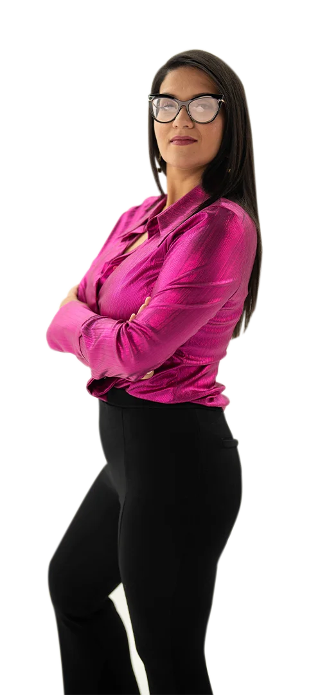
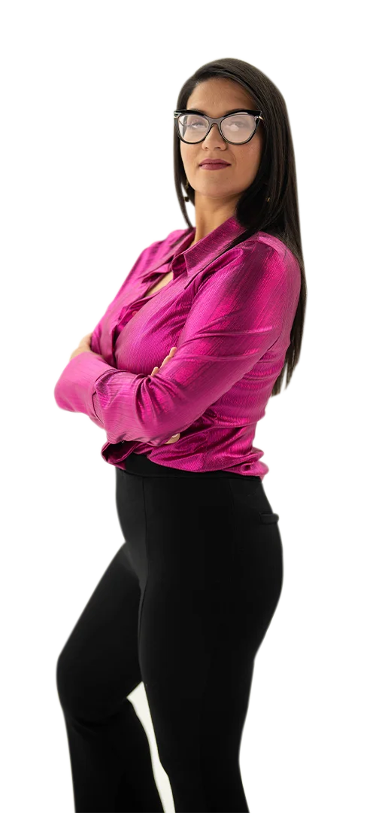
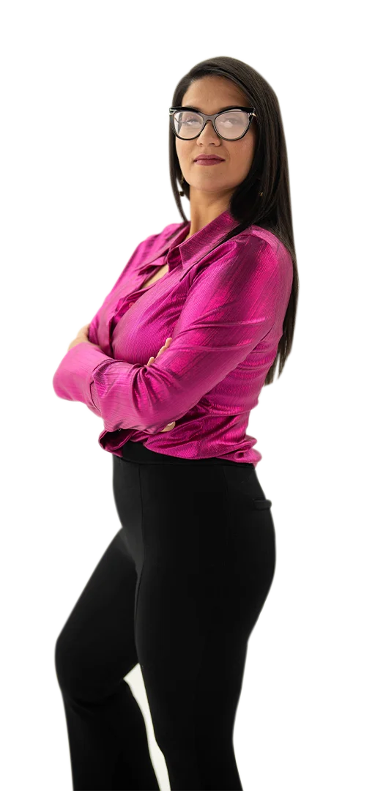
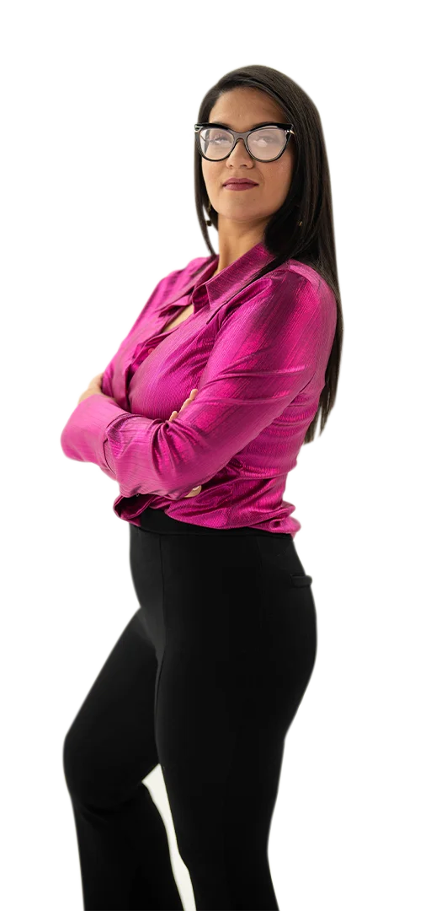

Desarrolla una conexión profunda e inquebrantable contigo
Un programa de entrenamiento mental y emocional para mujeres consienten que priorizan su salud mental
 





Eres una mujer consciente que agenda espacios para su bienestar y crecimiento.
Ya has trabajado en tu autoconocimiento pero quieres profundizar en la conexión contigo.
Muchas veces te agota exigirte demasiado.
Todavía corres por ser suficiente.
Quieres soltar cargas que no son tuyas sin sentirte culpable.
Aún te cuesta colocarte limites y colocarlos a tus vínculos más cercanos.
El miedo a decepcionarte o decepcionar a los demás alguna vez decide por ti.
La culpa hace de las suyas y te genera malestar
Decidir libre y sin culpa con limites firmes sin dejar de ser empática.
Escuchar activamente tu voz y confiar en ella.
Bajar volumen a la autoexigencia dañina (GERTRUDIZ) y vivir vida ligera y plena.
Gestionar todos tus miedos.
Coherencia entre lo que piensas, sientes y haces.
Mejorar tus relaciones.
Conocerte tanto que puedas identificar cualquier alarma y actuar antes de agotarte.
Decir adiós a la culpa y la presión.
Decidir por TI, alienada a tus nuevas creencias y expectativas.